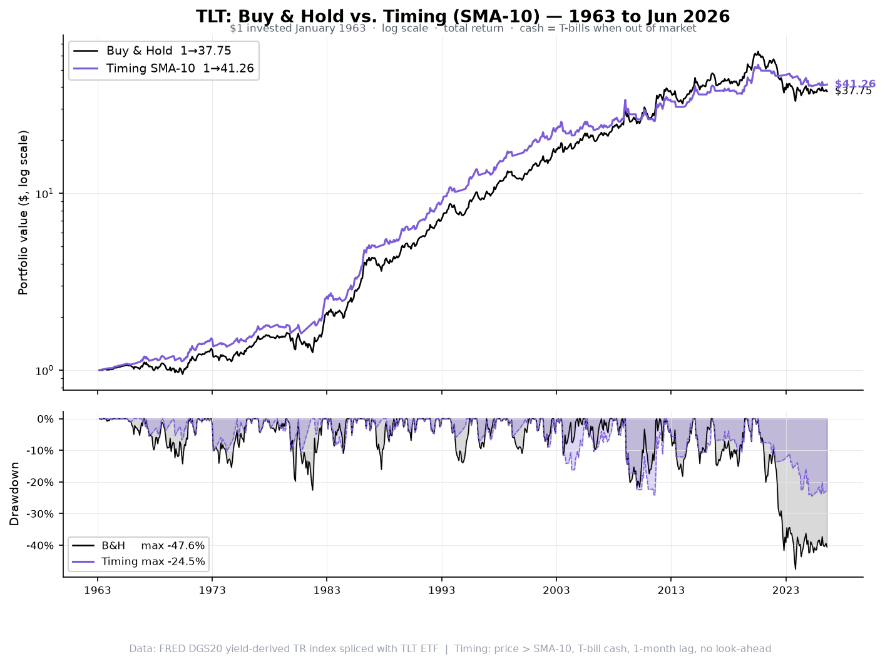
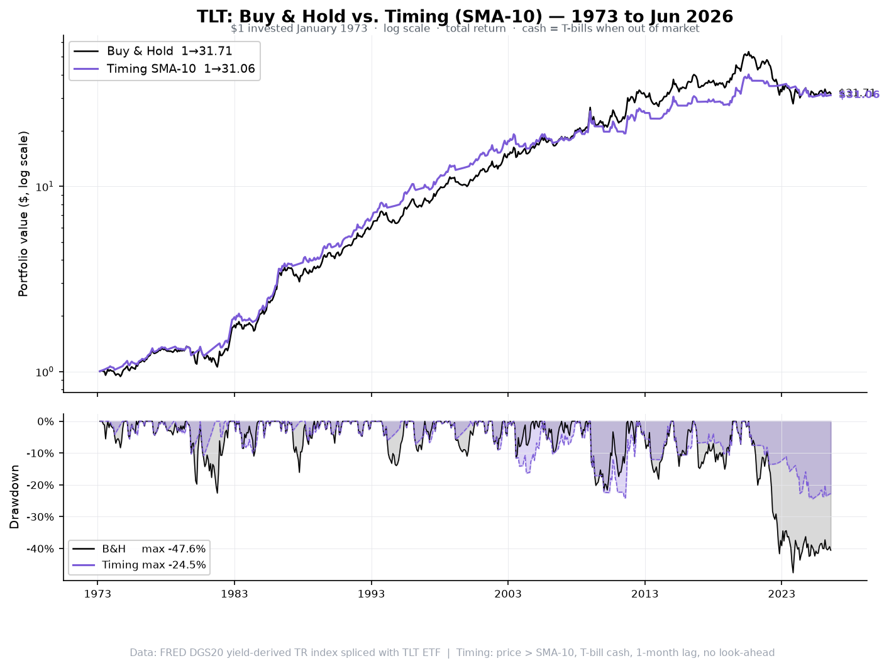
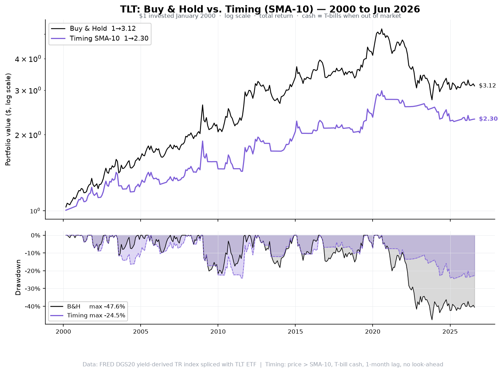

US 20-Year Treasury Bond — 63 years of monthly data, 1963–Jun 2026
tlt_bh_timing_1963_2026.csv — 763 monthly rows (Jan 1963–Jun 2026) with columns:
price, sma10, signal, monthly_ret_bh, monthly_ret_timing, equity_bh, equity_timing,
drawdown_bh_pct, drawdown_timing_pct
| Strategy | CAGR | Volatility | Sharpe | Max DD | Ulcer Index | $1 → |
|---|---|---|---|---|---|---|
| Buy & Hold | +5.92% | 11.39% | 0.185 | -47.61% | 12.24 | $38.40 |
| Timing SMA-10 | +6.00% | 9.28% | 0.212 | -24.47% | 7.97 | $40.36 |
| Strategy | CAGR | Volatility | Sharpe | Max DD | Ulcer Index | $1 → |
|---|---|---|---|---|---|---|
| Buy & Hold | +6.55% | 12.06% | 0.234 | -47.61% | 12.99 | $29.62 |
| Timing SMA-10 | +6.42% | 9.85% | 0.250 | -24.47% | 8.50 | $27.70 |
| Strategy | CAGR | Volatility | Sharpe | Max DD | Ulcer Index | $1 → |
|---|---|---|---|---|---|---|
| Buy & Hold | +4.54% | 13.09% | 0.264 | -47.61% | 17.48 | $3.23 |
| Timing SMA-10 | +3.43% | 10.78% | 0.195 | -24.47% | 11.56 | $2.44 |
$1 invested January 1963 · log scale (top) · drawdown (bottom) · B&H $38.40 | Timing $40.36

$1 invested January 1973 · log scale (top) · drawdown (bottom) · B&H $29.62 | Timing $27.70

$1 invested January 2000 · log scale (top) · drawdown (bottom) · B&H $3.23 | Timing $2.44

Timing rule: At each month-end compare price to 10-month SMA. Price > SMA → invested in TLT. Price ≤ SMA → exit to T-bills. Signal at close of t−1, applied to return of month t (1-month lag).
SMA warm-up: Full-year 1962 prices used to seed the SMA. First signal = Jan 1963. No look-ahead bias.
Base date: For a period starting Jan YYYY, $1 is invested at Dec (YYYY−1) close.
pct_change() is called on the full price series; the return series is then trimmed to the window start,
so the first month's return is never lost.
Bond return model: Monthly return = coupon income (y/12) − D_mod(y,20) × Δy + ½ C(y,20) × Δy², where D_mod and C are the yield-dependent modified duration and convexity of a 20-year par bond (versus 10-year for IEF). At typical yields (4–8%) TLT has D_mod ≈ 11–13 years versus IEF ≈ 7–8 years, giving roughly 1.6× more interest-rate sensitivity. The DGS20 gap (Jan 1987–Sep 1993) is filled by OLS interpolation from DGS10 and DGS30.
Cash: FRED TB3MS 3-month T-bill (1934–). Spliced with BIL ETF from 2007.
No costs, taxes or leverage.